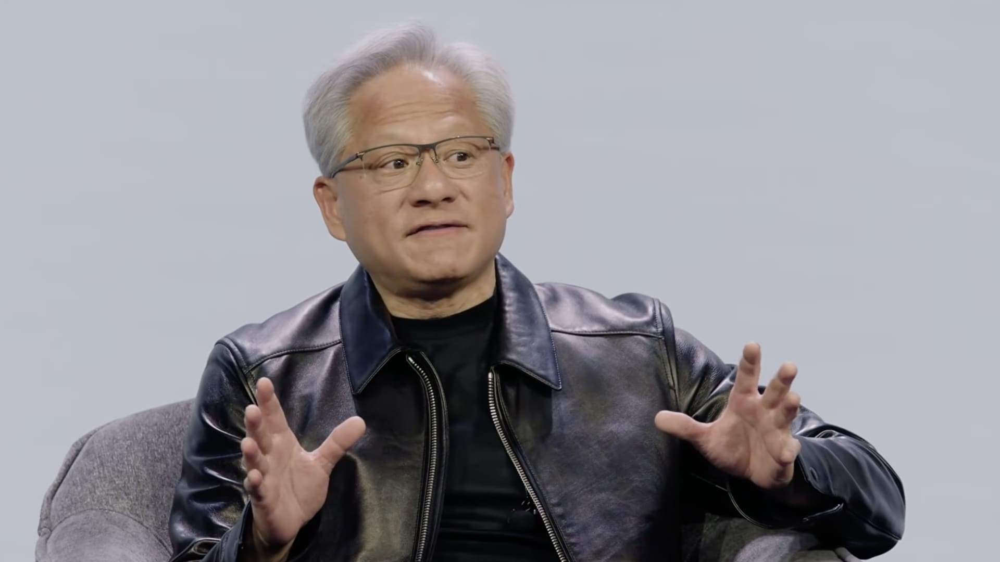
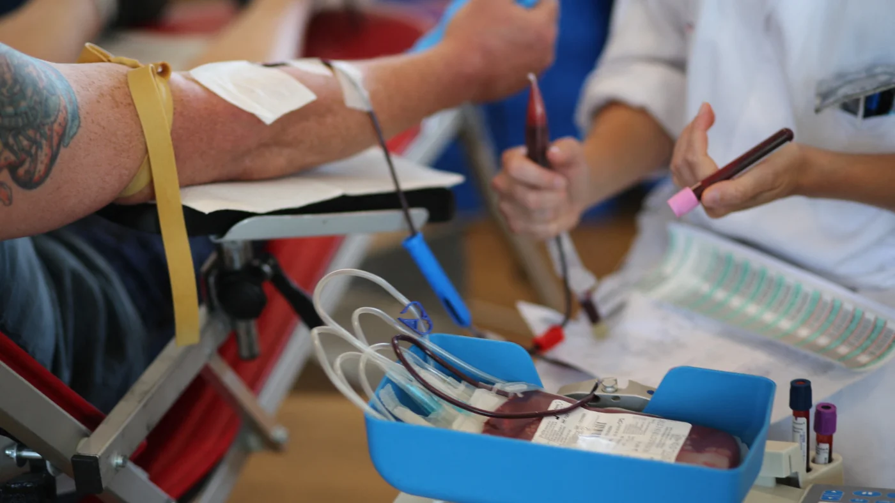
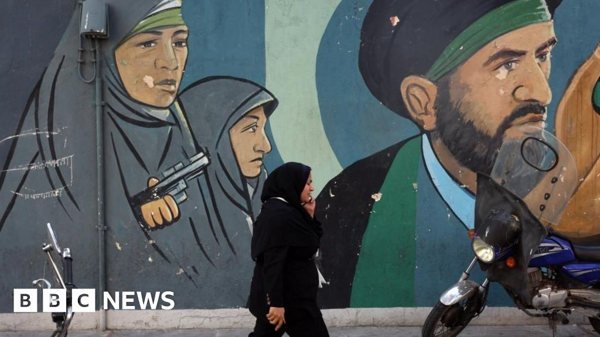

01

公众信息会议：园艺噪音条例
Public Information Session: Landscaping Noise Bylaw
了解关于提议的燃气动力吹叶机条例的信息。
Learn more about the proposed gas-powered leaf blower bylaw.
原始报道 / Original source ↗DAILY NEWS · 每日新闻简报
Independent AI-assisted summaries of linked reports. Headlines, dates and source URLs are supplied by NewsAPI; summaries are not independent verification of full articles. Please read original reports for details.
Public Information Session: Landscaping Noise Bylaw
了解关于提议的燃气动力吹叶机条例的信息。
Learn more about the proposed gas-powered leaf blower bylaw.
原始报道 / Original source ↗Nvidia opens investigation into Jensen Huang’s relationship with Chinese spy
黄仁勋承认与一名被美国官员认定为中国情报人员的商业高管有亲密关系。
Huang acknowledged being intimate with a business executive determined by U.S. officials to be working for Chinese intelligence.
原始报道 / Original source ↗
2026 live election results: Mass. Ballot Question 7, the ‘starter homes’ measure
在选举之夜，关注投票计数的进展。
Follow along as votes are counted on election night.
原始报道 / Original source ↗Secretary Galvin goes 'On the Record' about voter turnout, ballot questions
马萨诸塞州国务卿比尔·加尔文讨论了选举日、选民投票率和创纪录的投票问题。
Massachusetts Secretary of State Bill Galvin discussed Election Day, voter turnout, and the record-tying slate of ballot questions.
原始报道 / Original source ↗UFC’s Dana White says he will meet with Trump Monday over offer to be White House press secretary
特朗普在其白宫经历重大转型之际，向怀特提供了这一职位。
Trump's post came as his White House is in a period of major transition.
原始报道 / Original source ↗布伦特原油与WTI美国原油最新市场行情。
Brent and WTI crude oil market quotations.
价格及更新时间以行情提供方为准。
Trump says renewed Iran strikes ‘highly unlikely’ if talks progress but warns he could still strike
特朗普将避免美国重新打击与伊朗核计划和霍尔木兹海的谈判进展联系在一起。
Trump tied avoiding renewed U.S. strikes to progress in talks over Iran’s nuclear program.
原始报道 / Original source ↗Crude oil prices fall below $90 a barrel as Vance blames GOP election defeat on Iran war
原油价格在副总统JD范斯将共和党在中期选举中的重大损失归咎于伊朗战争后暴跌。
Crude oil prices tumbled after Vice President JD Vance blamed the Republicans' steep midterm election losses on the Iran war.
原始报道 / Original source ↗
Nvidia CEO Jensen Huang faces bipartisan congressional scrutiny over reported China spy link
立法者希望对Nvidia首席执行官黄仁勋与一名被指控为中国情报资产的关系进行质询。
Lawmakers want to question Nvidia CEO Jensen Huang following reports about his relationship with an alleged Chinese intelligence asset.
原始报道 / Original source ↗UFC's Dana White says he will meet with Trump Monday over offer to be White House press secretary
特朗普表示已向怀特提供白宫新闻秘书的职位。
President Trump said he has offered the job of White House press secretary to Dana White.
原始报道 / Original source ↗
Health intel-sharing group warns industry in wake of cyberattack on French blood bank
一家医疗保健情报共享组织警告其成员在网络攻击后锁定系统。
A healthcare intelligence-sharing organization is warning its members to lock down systems following cyberattacks.
原始报道 / Original source ↗
Stephen Miller replaces Susie Wiles as White House chief of staff
特朗普表示，苏茜·怀尔斯将被斯蒂芬·米勒取代，因共和党在中期选举中失去权力。
White House chief of staff Susie Wiles is being replaced by Stephen Miller.
原始报道 / Original source ↗
US offers $20m reward for information about Iran's nuclear programme
特朗普多次提到可能会重新打击伊朗的核设施。
Donald Trump has repeatedly raised the prospect of renewing strikes against Iran's nuclear facilities.
原始报道 / Original source ↗